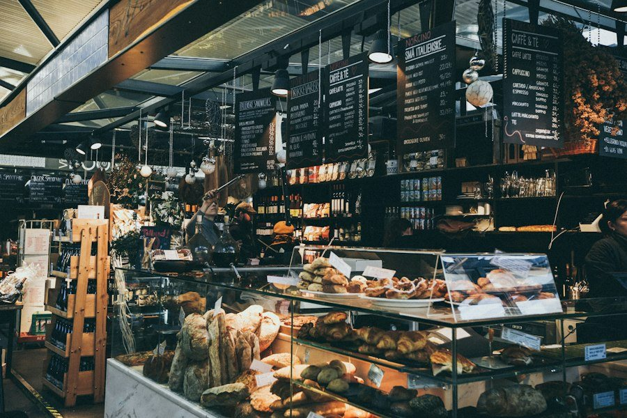

Bột, Nước, Muối & Thời Gian
Làm bánh men tự nhiên là một bài học về sự nhẫn nại. Khi ta tôn trọng thời gian của tự nhiên, ổ bánh sẽ đền đáp bằng hương vị sâu lắng nhất.
Con Men Mẹ "Levain" 5 Năm Tuổi
Trái tim của The Flour & Stone chính là hũ men tự nhiên được “cho ăn” đều đặn mỗi sáng suốt hơn 5 năm qua. Khác với men công nghiệp nở vội trong vài mươi phút, men hoang dã cần tới 36 giờ lên men chậm ở nhiệt độ mát để phá vỡ các phân tử gluten phức tạp, giúp người ăn không bị đầy bụng hay khó tiêu.
Khi mở nắp lò nướng ở nhiệt độ 250°C, mùi thơm nức của lớp vỏ caramen hóa hòa quyện cùng bơ sữa béo ngậy là khoảnh khắc kỳ diệu nhất mà mỗi người thợ bánh chúng tôi trân trọng mỗi ngày.

Nguyên Liệu Thuần Khiết
Bột Mì Hữu Cơ Không Tẩy
Nhập khẩu trực tiếp từ các cánh đồng lúa mì bền vững của Pháp và Canada, giữ trọn cám mầm dinh dưỡng và mùi hương ngũ cốc ngọt thanh.
Bơ Isigny Sainte-Mère AOP
Dòng bơ thượng hạng vùng Normandy nước Pháp với hàm lượng chất béo 84%, tạo nên những lớp vỏ croissant mỏng tang giòn rụm màu hoàng kim.
Hoa Quả Canh Tác Sạch
Dâu tây, việt quất và quả mọng được thu hái tươi mỗi sớm từ nông trại Đà Lạt, tuyệt đối không dùng mứt hoa quả đóng hộp chứa chất bảo quản.
Ghé Tiệm Thưởng Thức Bánh Mì & Cà Phê Nóng
Không gian ấm áp phảng phất hương bơ nướng tại 101 Lò Đúc luôn sẵn sàng đón chào bạn mỗi buổi sáng.